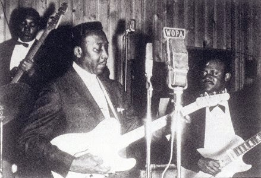
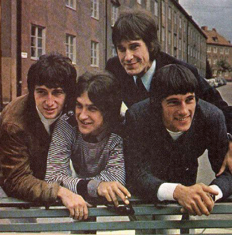

Heavy metal's quintessential guitar style, which is built around distortion-heavy riffs and power chords, traces its roots to early 1950s Memphis blues guitarists such as Joe Hill Louis, Willie Johnson and particularly Pat Hare, who captured a "grittier, nastier, more ferocious electric guitar sound" on records such as James Cotton's "Cotton Crop Blues" (1954).
Pat Hare
Other early influences include the late 1950s instrumentals of Link Wray, particularly "Rumble" (1958); the early 1960s surf rock of Dick Dale, including "Let's Go Trippin'" (1961) and "Misirlou" (1962); and The Kingsmen's version of "Louie Louie" (1963), which became a garage rock standard. However, the genre's direct lineage begins in the mid-1960s. American blues music was a major influence on the early British rockers of the era. Bands like The Rolling Stones and The Yardbirds developed blues rock by recording covers of classic blues songs, often speeding up the tempos. As they experimented with the music, the U.K. blues-based bands – and in turn the U.S. acts they influenced – developed what would become the hallmarks of heavy metal (in particular, the loud, distorted guitar sound). The Kinks played a major role in popularizing this sound with their 1964 hit "You Really Got Me".
The Kinks
In addition to The Kinks' Dave Davies, other guitarists such as The Who's Pete Townshend and The Yardbirds' Jeff Beck were experimenting with feedback. Where the blues rock drumming style started out largely as simple shuffle beats on small kits, drummers began using a more muscular, complex and amplified approach to match and be heard against the increasingly loud guitar. Vocalists similarly modified their technique and increased their reliance on amplification, often becoming more stylized and dramatic. In terms of sheer volume, especially in live performance, The Who's "bigger-louder-wall-of-Marshalls" approach was seminal to the development of the later heavy metal sound. The combination of this loud and heavy blues rock with psychedelic rock and acid rock formed much of the original basis for heavy metal. The variant or subgenre of psychedelic rock often known as "acid rock" was particularly influential on heavy metal and its development; acid rock is often defined as a heavier, louder, or harder variant of psychedelic rock, or the more extreme side of the psychedelic rock genre, frequently containing a loud, improvised, and heavily distorted, guitar-centered sound. Acid rock has been described as psychedelic rock at its "rawest and most intense", emphasizing the heavier qualities associated with both the positive and negative extremes of the psychedelic experience rather than only the idyllic side of psychedelia. In contrast to more idyllic or whimsical pop psychedelic rock, American acid rock garage bands such as the 13th Floor Elevators epitomized the frenetic, heavier, darker, and more psychotic psychedelic rock sound known as acid rock, a sound characterized by droning guitar riffs, amplified feedback, and guitar distortion, while the 13th Floor Elevators' sound in particular featured yelping vocals and "occasionally demented" lyrics. Frank Hoffman noted that "[Psychedelic rock] was sometimes referred to as 'acid rock'. The latter label was applied to a pounding, hard rock variant that evolved out of the mid-1960s garage-punk movement. ... When rock began turning back to softer, roots-oriented sounds in late 1968, acid-rock bands mutated into heavy metal acts."